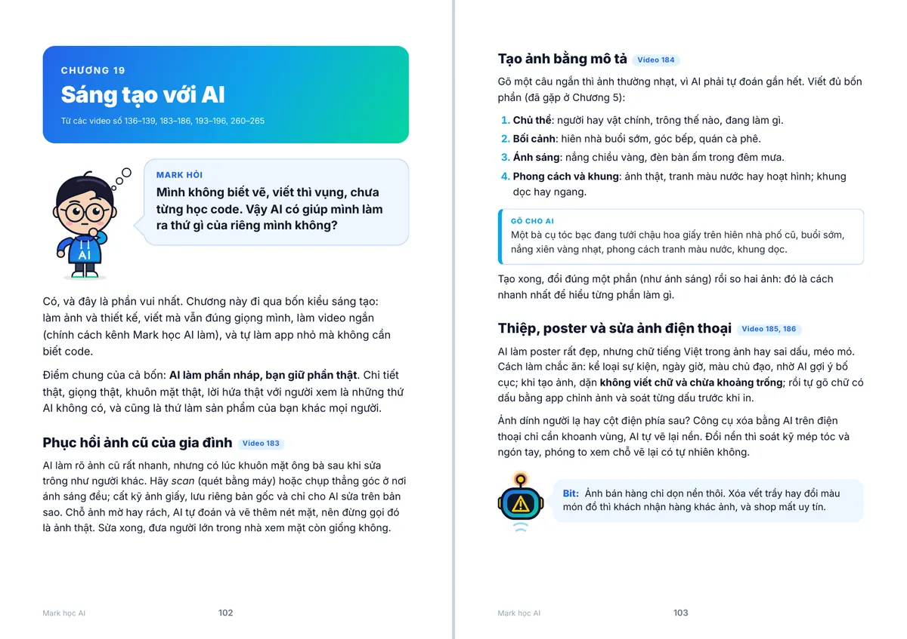
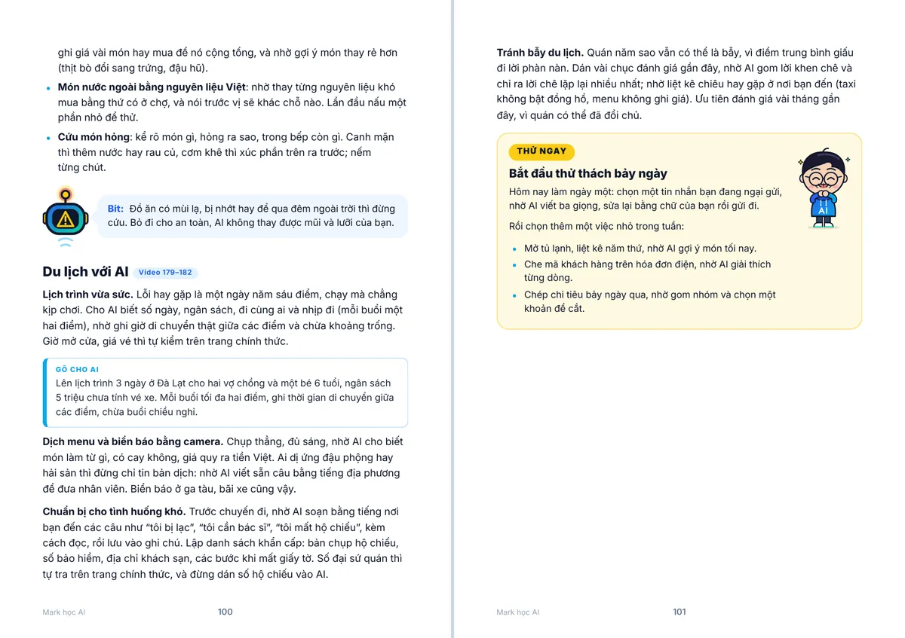

Trong sách có gì?
20 chương, đi từ dễ tới khó
Bắt đầu từ AI là gì, rồi prompt, bên trong bộ não AI, agent, an toàn số, tới AI trong nghề và đời sống.
Khung "Gõ cho AI" và "Thử ngay"
Mỗi chương có prompt mẫu chép là dùng được, và một việc nhỏ để làm liền.
Mỗi mục ghi số video
Đọc chỗ nào chưa rõ thì mở đúng video đó xem lại. Cả sách gom 300 video của kênh.
Mark hỏi, Bit giải thích
Giọng văn như trò chuyện, thuật ngữ giữ tiếng Anh, cuối sách có bảng thuật ngữ để tra.
Xem trước vài trang


Mục lục 20 chương
Bấm vào một chương để xem các mục bên trong.
1AI là gì và bắt đầu từ đâu?
- AI ở quanh bạn mỗi ngày (video 1)
- Máy tự học từ ví dụ (video 10)
- Vì sao ứng dụng video "hiểu" bạn? (video 11)
- Chatbot thật ra đang đoán chữ tiếp theo (video 7)
- Bắt đầu dùng AI trong năm phút (video 2)
- Chọn model nào cho việc nào? (video 18)
- Khi chỉ cần AI chọn một đáp án (video 17)
2Hỏi AI sao cho ra kết quả
- Prompt là gì? Công thức bốn mảnh (video 3)
- Đưa ví dụ để AI bắt đúng giọng (video 101)
- Giao vai và đặt luật chơi (video 102)
- Bảo AI nghĩ từng bước (video 103)
- Đặt sẵn khuôn trả lời (video 104)
- Chia việc lớn thành chuỗi việc nhỏ (video 105)
- Để AI tự chấm bài (video 106)
- Gõ tiếng Việt cho chuẩn (video 147)
- Bộ prompt mẫu của riêng bạn (video 107, 197)
3Bên trong bộ não AI
- AI không đọc chữ, nó đọc "mảnh" (video 19, 146)
- Bản đồ nghĩa (video 20)
- Attention: AI tập trung vào đâu? (video 21)
- AI đã "đọc" gì để thông minh? (video 22)
- Từ "con vẹt" thành trợ lý (video 23)
- Vì sao hỏi hai lần ra hai đáp án? (video 24)
- Ảo giác: AI bịa mà vẫn rất tự tin (video 8)
- Vì sao AI "quên" khi trò chuyện dài? (video 9)
- Cho AI đọc tài liệu của bạn (video 25)
- AI biết "nghĩ" trước khi nói (video 26)
- Ghép lại: hai giây sau cú bấm Enter (video 200)
4AI học thế nào, thi thế nào?
- Hàng tỷ chiếc núm vặn (video 38)
- Biết mình sai bao nhiêu (video 39)
- Xuống núi trong sương mù (video 40)
- Truy ngược lỗi (video 41)
- Học vẹt và học hiểu (video 42)
- Vì sao càng to càng giỏi (video 43, 44)
- Bài thi của AI và chuyện "học tủ" (video 45, 46)
- Đấu trường AI (video 47)
- Đề thi của riêng bạn (video 48)
- Chấm những điều khó chấm (video 49)
5AI nghe, nói, nhìn và vẽ
- AI "nhìn" ảnh của bạn (video 13)
- AI vẽ tranh thế nào? (video 12)
- AI nghe bạn nói thế nào? (video 50)
- AI đọc chữ thành giọng (video 51)
- Trò chuyện bằng giọng nói (video 52)
- AI xem video (video 53)
- AI làm video từ một câu (video 54)
- Một bộ não, nhiều giác quan (video 55)
- LiDAR: "nhìn" bằng tia laser (video 5)
6Từ điển AI bỏ túi
- Mốc chốt dữ liệu và tra web (video 201, 202)
- Training và inference (video 129)
- Fine-tuning: dạy thêm một khóa nghề (video 113)
- Open-source và open-weight (video 114)
- Quantization và chạy AI ngay trên máy bạn (video 130, 131)
- Distillation, synthetic data và MoE (video 115–117)
- API: cổng để app mượn não AI (video 205)
- Rate limit, latency và streaming (video 206, 242)
- Model version: vì sao AI "đổi tính" (video 243)
- System prompt và prompt injection (video 238, 239)
- Jailbreak: lừa AI vượt rào (video 204)
- RLHF và thói chiều ý (video 203, 240)
- Overfitting, nhìn từ phía người dùng (video 241)
7Biến AI thành trợ lý của riêng bạn
- Dạy AI biết bạn là ai (video 27)
- Thư viện câu lệnh của riêng bạn (video 28)
- Mỗi việc một phòng làm việc (video 29, 66)
- Trợ lý tra cứu tài liệu riêng (video 30)
- Để AI tự làm việc lặp lại (video 31)
- Cho AI vào lịch, email: tới đâu là đủ? (video 32)
- Claude không chỉ là khung chat (video 63)
- Artifacts và Claude Design (video 64, 65)
- Skills và Connectors (video 67)
- Cowork: giao việc, đi làm việc khác (video 68)
- Claude ngay trong Chrome, Excel, PowerPoint (video 69)
- Claude Code cho người không biết lập trình (video 70)
- Claude Science: phòng thí nghiệm có trợ lý AI (video 71)
- Hậu trường: kênh Mark học AI được làm ra thế nào? (video 100)
8AI agent: từ trả lời đến tự làm việc
- AI agent là gì? (video 16)
- Tool calling: AI dùng công cụ thế nào? (video 72)
- MCP: cổng sạc chung cho AI (video 73, 74)
- Dùng MCP cho an toàn (video 75)
- Vì sao cần cả một đội AI? (video 76, 77)
- Khi đội AI rối (video 78)
- Việc nào giao được cho agent? (video 233)
- Viết lời giao việc rõ ràng (video 234, 235)
- Agent tự dùng trình duyệt: ngồi xem nó làm (video 236)
- Ba rào chắn: tiền, thư, xóa (video 237)
9Sản phẩm AI được làm ra thế nào?
- Model chỉ là động cơ (video 56)
- Việc nào đáng dùng AI? (video 57)
- Thiết kế cho một cỗ máy đôi khi sai (video 58)
- Khi sản phẩm AI vấp ngã (video 61)
- Đo một sản phẩm AI (video 59)
- Mỗi câu hỏi tốn bao nhiêu? (video 60)
- Hai giây của một câu hỏi (video 79, 80)
- Hai cổng rào chắn (video 81, 82)
- Thi lại trước khi đổi model (video 83)
- Hộp đen và phòng điều khiển (video 84, 85)
- Tự làm sản phẩm AI đầu tiên (video 62)
10Đừng để AI lừa: an toàn số cho cả nhà
- Giọng giả: cuộc gọi lúc nửa đêm (video 14, 108)
- Thấy mặt vẫn có thể là giả (video 109)
- Người nổi tiếng giả mời đầu tư (video 110, 214)
- Tin nhắn lừa đảo do AI viết (video 111)
- Việc nhẹ lương cao và lừa đảo tình cảm (video 266, 267)
- Mã QR dán đè và app giả đọc tin nhắn (video 268, 269)
- Ảnh đăng mạng làm lộ gì? (video 270)
- Những gì không nên dán vào AI (video 15)
- Mật khẩu gia đình và năm thói quen an toàn (video 112, 298)
11Mặt trái của AI và cách kiểm chứng
- AI cũng thiên vị (video 118)
- Tranh AI vẽ có bản quyền không? (video 119)
- Một câu hỏi AI tốn bao nhiêu điện, nước? (video 120)
- Dữ liệu của bạn đi đâu? (video 121)
- Ảnh thật hay ảnh AI? (video 122, 224)
- Tin sức khỏe lan truyền (video 223)
- AI bịa nguồn và biểu đồ gây hiểu lầm (video 225, 226)
- Ba bước trước khi tin một tin nóng (video 227)
- Đọc tin model mới và tít "AI thay nghề" (video 281, 282)
- "Tích hợp AI", video demo và nguồn tin đáng tin (video 283–285)
12Học gì cũng nhanh hơn với AI
- AI làm gia sư riêng cho bạn (video 4, 6)
- Tập mà không sợ sai (video 86, 87)
- Đóng vai và tình huống rẽ nhánh (video 88, 89)
- Tự làm mô phỏng bấm được (video 90)
- Bẫy của mô phỏng (video 91)
- Xem không bằng làm (video 92, 93)
- Biến bài giảng thành bài tập (video 94, 153)
- Để AI hỏi ngược bạn (video 95)
- Học tích hợp qua một dự án thật (video 96)
- Thi vấn đáp và viết tiểu luận không đạo văn (video 154, 155)
- Học tiếng Anh cùng AI (video 156, 207–211)
- Dành cho thầy cô: giáo án, đề, nhận xét (video 148–152)
13AI và nghề của bạn
- AI thay việc, không thay nghề (video 33)
- Việc nào AI nhận trước? (video 34)
- Kỹ năng giữ giá khi có AI (video 35)
- CV khớp vị trí, song ngữ Việt và Anh (video 36, 228)
- LinkedIn và thư giới thiệu bản thân (video 229)
- Phỏng vấn thử với AI (video 230)
- Chuẩn bị nói chuyện lương (video 231)
- Ba mươi ngày đầu đi làm (video 232)
- Lộ trình 90 ngày bắt kịp AI (video 37)
14AI cho dân văn phòng và giấy tờ
- Công thức Excel bằng lời (video 170)
- Tóm tắt cuộc họp: ai làm gì, hạn khi nào (video 171)
- Slide từ dàn ý (video 172)
- Đọc nhanh email dài, trả lời đủ ý (video 173)
- Dịch tài liệu mà giữ đúng thuật ngữ (video 174)
- Báo cáo tuần trong mười phút (video 271)
- Viết quy trình cho người mới (video 272)
- Góp ý đồng nghiệp mà không mất lòng (video 273)
- Kế hoạch dự án và mốc thời gian (video 274)
- Đọc hàng trăm phản hồi khách hàng (video 275)
- Đơn nghỉ phép, đơn xin việc (video 286)
- Thư khiếu nại có kết quả (video 287)
- Giấy tờ hồ sơ visa, nhập học (video 288)
- Đọc hợp đồng lao động trước khi ký (video 289)
- Thư cảm ơn, thư xin lỗi khách (video 290)
15Bán hàng online và quản lý tiệm nhỏ
- Mô tả sản phẩm trong một phút (video 123)
- Ảnh sản phẩm bằng AI (video 124)
- Kịch bản livestream và video ngắn (video 125)
- Trả lời tin nhắn khách (video 126)
- Đọc một trăm đánh giá trong một phút (video 127)
- Những việc đừng giao cho AI khi bán hàng (video 128)
- Tin tuyển dụng rõ ràng, lọc hồ sơ công bằng (video 291, 292)
- Phỏng vấn đúng việc (video 293)
- Sổ tay và lịch tuần đầu cho nhân viên mới (video 294)
- Xếp ca làm việc (video 295)
- Khen và góp ý để giữ người (video 296)
16AI trong những nghề ngách
- Quán ăn, tiệm bánh: thực đơn, giá vốn, nhập hàng (video 157, 218)
- Homestay, lễ tân, hướng dẫn viên: khách nhiều thứ tiếng (video 160, 217, 257)
- Thợ sửa: giải thích hư hỏng và báo giá dễ hiểu (video 162, 192, 220, 254)
- Tiệm may, freelancer: chốt yêu cầu và phạm vi (video 190, 259)
- Nhà vườn, ao tôm: nhật ký trước, hỏi chuyên gia sau (video 158, 188)
- Sổ sách và kho: hộ kinh doanh, tạp hóa, nhà thuốc (video 161, 191, 256)
- Lịch hẹn và chăm khách: tiệm tóc, gym, gia sư, studio (video 187, 219, 221, 222)
- Sự kiện, môi giới, giao hàng, chăm sóc khách (video 159, 189, 255, 258)
17AI trong gia đình và sức khỏe
- Con dùng AI làm bài tập (video 140)
- Dạy con kiểm tra lại AI (video 141)
- Bốn luật dùng AI trong nhà (video 143)
- Giúp ông bà tránh lừa đảo giả giọng (video 142)
- Truyện trước giờ ngủ có tên con (video 244)
- Trả lời chuỗi câu hỏi "vì sao" (video 245)
- Trò chơi học từ đồ có sẵn trong nhà (video 246)
- Tiệc sinh nhật nhỏ và tin nhắn với cô giáo (video 247, 248)
- Lịch tập mười lăm phút tại nhà (video 175)
- Thực đơn cả tuần, đi chợ một lần (video 176)
- Đọc kết quả xét nghiệm với AI (video 177)
- Ngủ ngon hơn với thói quen buổi tối (video 178)
18AI trong đời sống hằng ngày
- Thử thách 7 ngày với AI (video 163–169)
- Đọc điều khoản vay và thẻ tín dụng (video 212)
- So sánh gói bảo hiểm (video 213)
- Quỹ khẩn cấp và giấy tờ thuế (video 215, 216)
- Mua đồ điện mà không bị dắt mũi (video 249)
- Hợp đồng thuê nhà và hóa đơn điện (video 250, 251)
- Chuyển nhà và chăm thú cưng (video 252, 253)
- Vào bếp cùng AI (video 276–280)
- Du lịch với AI (video 179–182)
19Sáng tạo với AI
- Phục hồi ảnh cũ của gia đình (video 183)
- Tạo ảnh bằng mô tả (video 184)
- Thiệp, poster và sửa ảnh điện thoại (video 185, 186)
- Dạy AI giọng văn của bạn (video 193)
- Bài đăng, lời chúc và sửa chính tả (video 194–196)
- Làm video ngắn: ý tưởng và câu mở đầu (video 260, 261)
- Tiêu đề, phụ đề, lịch đăng và số liệu (video 262–265)
- Vibe coding: làm app không cần code (video 136)
- Mô tả app và sửa lỗi (video 137, 138)
- Tự làm app: điều cần cẩn thận (video 139)
20AI ra đời thật, và tổng ôn
- Robot hình người làm được gì? (video 132)
- Xe tự lái nhìn đường thế nào? (video 133)
- AI trong bệnh viện, trên đồng ruộng, trong nhà máy (video 134, 135)
- AGI là gì, và còn xa không? (video 144, 145)
- Bản đồ cả cuốn sách (video 97)
- Mười hiểu lầm phổ biến về AI (video 98)
- Năm cái bẫy khi dùng AI (video 198)
- Lộ trình tự học bốn tuần (video 99)
- Bạn đã đi được bao xa? (video 199, 299)
- Một ngày của Mark (video 300)
Phần cuối: Bảng thuật ngữ (trang 113), Xem video (trang 124).